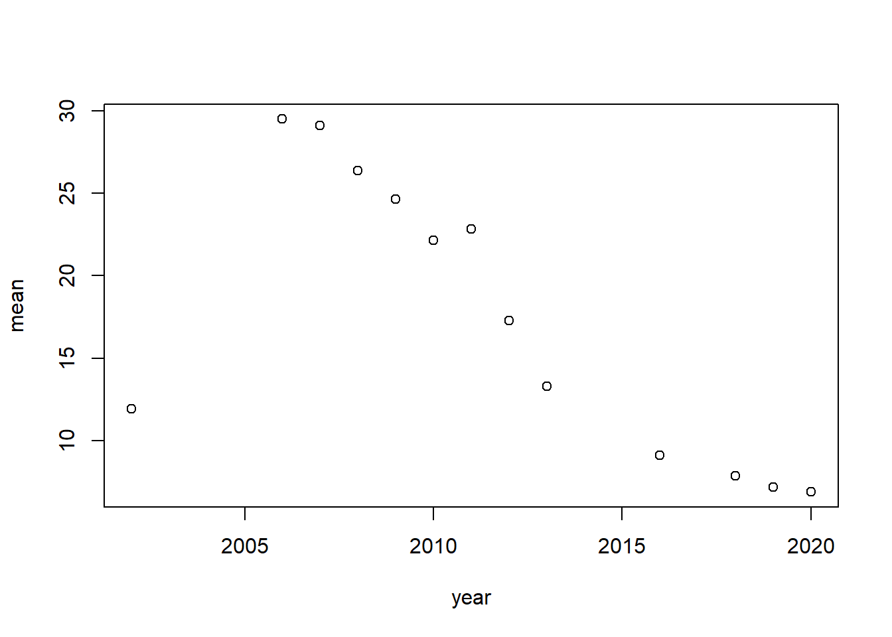

# A tibble: 6 × 6
Contestant Birthday Birthplace Hometown Description Season
<chr> <chr> <chr> <chr> <chr> <dbl>
1 Kelly Clarkson 24-Apr-82 Fort Worth, Texas Burleso… "She perfo… 1
2 Justin Guarini 28-Oct-78 Columbus, Georgia Doylest… "He perfor… 1
3 Nikki McKibbin 28-Sep-78 Grand Prairie, Texas <NA> "She had p… 1
4 Tamyra Gray 26-Jul-79 Takoma Park, Maryla… Atlanta… "She had a… 1
5 R. J. Helton 17-May-81 Pasadena, Texas Cumming… "J. Helton… 1
6 Christina Christian 21-Jun-81 Brooklyn, New York <NA> ".Christin… 1
head(ratings)
# A tibble: 6 × 17
season show_number episode airdate `18_49_rating_share` viewers_in_millions
<dbl> <dbl> <chr> <chr> <chr> <dbl>
1 1 1 Auditions June 1… 4.8 9.85
2 1 2 Hollywood… June 1… 5.2 11.2
3 1 3 Top 30: G… June 1… 5.2 10.3
4 1 4 Top 30: G… June 1… 4.7 9.47
5 1 5 Top 30: G… June 2… 4.5 9.08
6 1 6 Top 30: G… June 2… 4.2 8.53
# ℹ 11 more variables: timeslot_et <chr>, dvr_18_49 <chr>,
# dvr_viewers_millions <chr>, total_18_49 <chr>,
# total_viewers_millions <chr>, weekrank <chr>, ref <lgl>, share <chr>,
# nightlyrank <dbl>, rating_share_households <chr>, rating_share <chr>
head(seasons)
# A tibble: 6 × 10
season winner runner_up original_release original_network hosted_by judges
<dbl> <chr> <chr> <chr> <chr> <chr> <chr>
1 1 Kelly Cla… Justin G… June 11 (2002-0… Fox Ryan Sea… Paula…
2 2 Ruben Stu… Clay Aik… January 21 (200… Fox Ryan Sea… Paula…
3 3 Fantasia … Diana De… January 19 (200… Fox Ryan Sea… Paula…
4 4 Carrie Un… Bo Bice January 18 (200… Fox Ryan Sea… Paula…
5 5 Taylor Hi… Katharin… January 17 (200… Fox Ryan Sea… Paula…
6 6 Jordin Sp… Blake Le… January 16 (200… Fox Ryan Sea… Paula…
# ℹ 3 more variables: no_of_episodes <dbl>, finals_venue <chr>, mentor <chr>
head(songs)
# A tibble: 6 × 8
season week order contestant song artist song_theme result
<chr> <chr> <dbl> <chr> <chr> <chr> <chr> <chr>
1 Season_01 20020618_top_30_gro… 1 Tamyra Gr… And … Jenni… <NA> Advan…
2 Season_01 20020618_top_30_gro… 2 Jim Verra… When… Doris… <NA> Advan…
3 Season_01 20020618_top_30_gro… 3 Adriel He… I'll… Edwin… <NA> Elimi…
4 Season_01 20020618_top_30_gro… 4 Rodesia E… Dayd… The M… <NA> Elimi…
5 Season_01 20020618_top_30_gro… 5 Natalie B… Crazy Patsy… <NA> Elimi…
6 Season_01 20020618_top_30_gro… 6 Brad Estr… Just… James… <NA> Elimi…
Warning: Expected 2 pieces. Missing pieces filled with `NA` in 2 rows [98,
102].
summary(clean_auditions)
season audition_date_start audition_date_end city
Min. : 1.00 Min. :2002-04-20 Min. :2002-04-22 Los Angeles : 10
1st Qu.: 6.00 1st Qu.:2006-08-11 1st Qu.:2006-08-11 Nashville : 7
Median :10.00 Median :2010-09-05 Median :2010-09-05 New York City: 7
Mean :10.37 Mean :2011-04-14 Mean :2011-04-14 San Francisco: 7
3rd Qu.:15.00 3rd Qu.:2015-09-05 3rd Qu.:2015-09-05 Atlanta : 6
Max. :18.00 Max. :2019-09-21 Max. :2019-09-21 Austin : 5
(Other) :100
state audition_venue episodes episode_air_date
California:22 Length:142 Length:142 Length:142
Texas :13 Class :character Class :character Class :character
Georgia : 9 Mode :character Mode :character Mode :character
New York : 9
Tennessee : 9
(Other) :78
NA's : 2
callback_venue callback_date_start callback_date_end
Length:142 Min. :2002-02-06 Min. :2002-02-06
Class :character 1st Qu.:2006-10-02 1st Qu.:2006-10-03
Mode :character Median :2010-11-09 Median :2010-11-10
Mean :2011-06-11 Mean :2011-06-12
3rd Qu.:2015-09-13 3rd Qu.:2015-09-14
Max. :2019-09-21 Max. :2019-09-21
NA's :13 NA's :13
tickets_to_hollywood guest_judge
Min. : 6.0 Length:142
1st Qu.: 20.0 Class :character
Median : 29.0 Mode :character
Mean : 41.8
3rd Qu.: 37.0
Max. :561.0
NA's :48
# A tibble: 22 × 2
state mean
<fct> <dbl>
1 " Missouri" 35
2 " Massachusetts" 28.3
3 " Alabama" NA
4 " California" NA
5 " Colorado" NA
6 " Florida" NA
7 " Georgia" NA
8 " Illinois" NA
9 " Louisiana" NA
10 " Michigan" NA
# ℹ 12 more rows
# A tibble: 16 × 2
year mean
<chr> <dbl>
1 2006 29.5
2 2007 29.1
3 2008 26.4
4 2009 24.6
5 2011 22.8
6 2010 22.2
7 2012 17.3
8 2013 13.3
9 2002 11.9
10 2016 9.09
11 2018 7.84
12 2019 7.16
13 2020 6.88
14 2003 NA
15 2004 NA
16 2005 NA
Yikes
plot(viewers_by_year)

Hypothesis/Question
While there are not too many clear options that I can see, I think what could be interesting is trying to predict the number of viewers based on some of the other variables in the ratings table.
season show_number weekrank year
Min. : 1.000 Min. : 1.00 Min. : 1.000 Min. :2002
1st Qu.: 4.000 1st Qu.: 9.00 1st Qu.: 3.000 1st Qu.:2005
Median : 6.000 Median :18.00 Median : 3.000 Median :2007
Mean : 6.815 Mean :19.06 Mean : 4.094 Mean :2008
3rd Qu.:10.000 3rd Qu.:28.00 3rd Qu.: 5.000 3rd Qu.:2011
Max. :15.000 Max. :44.00 Max. :11.000 Max. :2016
viewers_in_millions
Min. : 5.98
1st Qu.:17.34
Median :23.38
Mean :22.09
3rd Qu.:26.90
Max. :38.10
model .metric .estimator mean n std_err .config
1 LM rmse standard 4.8040789 5 0.12140591 Preprocessor1_Model1
2 LM rsq standard 0.4799109 5 0.03524461 Preprocessor1_Model1
3 RF rmse standard 2.2305172 5 0.16620793 Preprocessor1_Model1
4 RF rsq standard 0.8967623 5 0.01307662 Preprocessor1_Model1
5 DT rmse standard 3.1343732 5 0.23193623 Preprocessor1_Model1
6 DT rsq standard 0.7760581 5 0.02892788 Preprocessor1_Model1
From these results we can see that the model with the best R^2 value is the RandomForest Model, thich also has the lowest mean RMSE value. Due to this accuracy, we will proceed to use this model on the test data.
The R^2 value is actually higher on the Test dataset than the Train dataset, and the RMSE is lower as well.
Conclusions
I was able to clean many different variables on several datasets that were very messy
I was able to explore several different variables and while I struggled to find a good combination of predictors/responses, I did identify my Hypothesis.
My Question/Objective was to predict the number of viewers based on the numeric variables in the Ratings table.
I split and preprocessed the data and then ran 3 different models on the training data. The RandomForest performed the best and the most important predictors were ‘Season’ and ‘Year’
I tested the chosen model (RandomForest) on the test data and uncovered favorable results.
I learned a tremendous amount about handling very messy data as well as how to use tidymodels and recipies. I had absolutely no experience with the latter and I now see why they are such a staple for many data scientists.